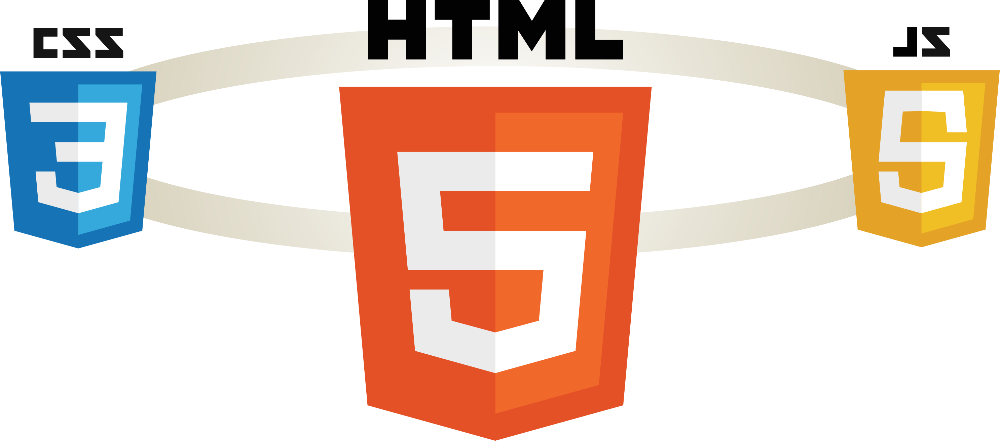

A report from the course DA377B Software Development for the Web VT20
S01
My very first course was on Khand Academy platform and it was about on of the JavaScript library which use on HTML canvas for drawing. The purpose of the course was to learn programming and not related directory to the web development and my few next courses were taken before starting in Kristianstad Högskola were Web Utveckling & Web Server Programmering for the Swedish secondary school level. The clock below is one of my first trainning project
I learn a little about Html, CSS, JavaScript, php and SQL and as one of the assignments for those courses I had to build a website both static and dynamic and learn how to send and receive data from and to database using PHP. Since I start my study in Kristianstad Högskola I became far from the web development domain since all our previous courses isn't related directly to the web development.
This course is a great opportunity to restore and add new to my previous information since I never worked with any framework. Specifically, for this section I will try to figure out the whole picture and decide which skills I have to mastered, but in general my interesting is on the backend part.
I learnt to use Git & GitHub but since I'm a person who prefer to deal with GUI, I rarely worked with command line. My knowledge in Git & GitHub doesn't go deep, I assume that I understand and implement the basics push, pull, commit but still have to make some effort and read document behind those, So the Markdown and GitHub pages are new concepts to me..
S02
During my previous Webutveckling course, I learnt a little about the three basic languages for any web developer, but my knowledge never exceed the course learning since I didn’t practice well, so every time I try to create a webpage I have to return to the documentations.
HTML is a short for Hypertext Markup Language. It’s the language which used to create a website and it’s the basic structure for every page on the web. HTML isn’t exactly programming language, but it used to show images, links, text among others which the page contains. CSS is a short for Cascading Style Sheets, it is a style language which used to decorate a document written in HTML. CSS is the main way to create an attractive website. JavaScript is the 3rd language of the three basic languages for web developing. It used to create the interactivity of the website.

The browser and the web server communicate through HTTP protocol, a browser as the web server for a specific information and the server respond with the proper content
Since I do not intend to become a web developer, my goal in this section is to remember what I know about the three languages, and to preserve what it takes to be able to survive as a backend developer.
S03
Here is the text for this section.
S04
Here is the text for this section.
S05
Here is the text for this section.
S06
Here is the text for this section.
S07
Here is the text for this section.
S08
Here is the text for this section.
S09
Here is the text for this section.
S10
Here is the text for this section.